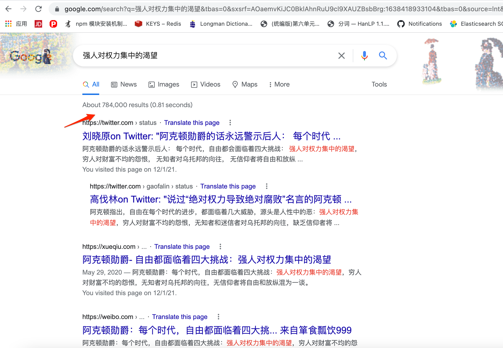
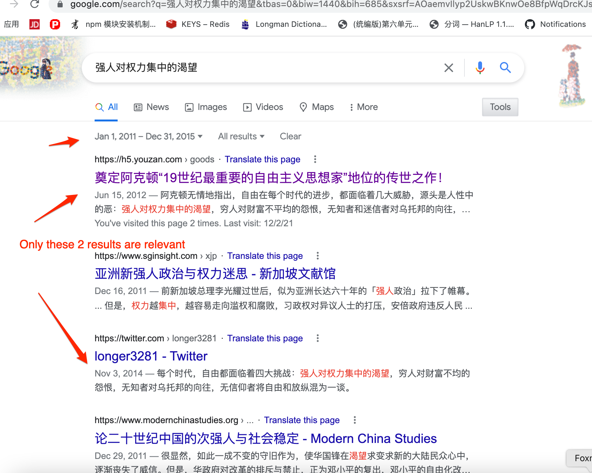
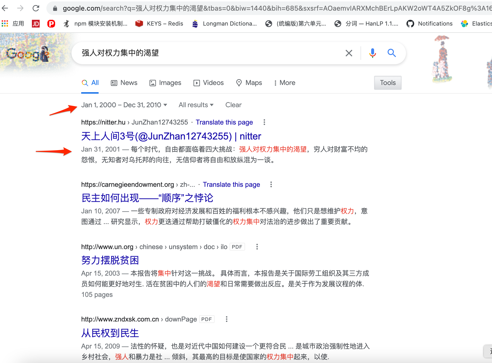

中文互联网上流传着两句阿克顿勋爵的“名言”
中文互联网上流传着两句阿克顿勋爵的“名言”，一句是“绝对的权力，导致绝对腐败 (Power tends to corrupt, and absolute power corrupts absolutely.) ，另一句就是这个 “自由面临的四大挑战”:
每个时代，自由都会面临着四大挑战： 强人对权力集中的渴望，穷人对财富不均的怨恨，无知者对乌托邦的向往，无信仰者将自由和放纵混为一谈。 而它们共同的思想源头，是激进主义。
我一向对网上流行的名人名言保持一种警惕，Lord Acton 真的说过这样的话吗？尤其这所谓四大挑战里后面两个提法明显不严谨，难道就只有无知的人才向往乌托邦吗；就只有无信仰的人才会把自由和放纵混为一谈吗？
我自己尝试把这句 ”强人对权力集中的渴望，穷人对财富不均的怨恨，无知者对乌托邦的向往，无信仰者将自由和放纵混为一谈“ 翻译成英文（大致翻译成 the strong desires concentration of power, the poor complains about wealth inequality, the ignorant and the superstitious' yearn for utopia, and the faithless confuse liberty with self-indulgence.）然后去搜索，完全没法找到出处。阿克顿勋爵到底有没有说过这句话，如果说过他的原话是什么？
在前GPT年代，我能想到办法就是去 StackExchange 发问。StackExchange 最知名的产品是 StackOverflow , 但是它的其他网站，比如关于历史的 history.stackexchange 和英语学习的网站 english.stackexchange 都很不错。我在这两个论坛都发问了 "Did Lord Acton ever say "freedom faces four major challenges"?"，结果都在发问的当天 (Nov 30, 2021) 就得到一致的回答，即阿克顿勋爵到底说了什么。
四大挑战的出处
在 history.stackexchange得到的答案非常完整 ：
That appears to be adapted from a passage in "The History of Freedom in Antiquity", which was both an essay and a lecture Lord Acton once gave.
Liberty, next to religion, has been the motive of good deeds and the common pretext of crime . . . In every age its progress has been beset by its natural enemies, by ignorance and superstition, by lust of conquest and by love of ease, by the strong man's craving for power, and the poor man's craving for food. . . . At all times sincere friends of freedom have been rare, and its triumphs have been due to minorities who have prevailed by associating themselves with auxiliaries whose objects often differed from their own.
As you can see, the wording is somewhat different, and the order of the challenges is very different, and the conclusion was completely different. Nevertheless, the parallels are very clear.
The Acton Institute has the full text of the essay for further reading. （这段话的翻译见下面的描述）
而且回答的人非常🐂，居然把中文出处都找出来：
The Chinese version appears to have originated from an essay, "History is not only about truth, but also morality and faith (历史不仅关乎真相，更关乎道德与信仰)" by someone writing under the name Lì Quán (沥泉). This appears to be promotional material by the online bookstore, Xianzhi (先知书店). Both are clearly credited in the very earliest instance I can locate, which dates to 14 February 2019 (I suspect there's an original version on Weibo, but I cannot find it)
Notably, this essay did not present the passage as a quote, but merely the author's own summation of Acton's beliefs:
上溯西方的传统就可以发现，无论是在基督教的历史中，还是在雅典的时代，都能发现自由社会的踪影。(...)
然而，阿克顿无情地指出，自由在每个时代的进步，都面临着几大威胁，源头是人性中的恶：强人对权力集中的渴望，穷人对财富不平均的怨恨，无知者和迷信者对乌托邦的向往，缺乏信仰者将自由和放纵混为一谈。
然而更不幸的是，大多数人在历史中没有学到任何好的东西，所以，历史的悲剧一次又一次重演……而中国至今还未走出治乱兴衰的历史循环。
Looking back on western tradition, we find signs of liberal society in both the history of Christianity or the time of Athens (. . . )
However, Acton bluntly points out, in every age liberty's progressive faces several threats. The common source is the evil in human nature: the strong desires concentration of power, the poor complains about wealth inequality, the ignorant and the superstitious' yearn for utopia, and the faithless confuse liberty with self-indulgence.
However, even more unfortunately, most people has not learned from history. And so, the tragedies of history repeats again and again... And China, even now, has not broken out of the historical cycle of dark and golden ages.
Although the surrounding fluff is quite different, this is the exact wording as the popularized fake quote.
先知书店的微信公众号在2019年2月14发表的文章 历史不仅关乎真相，更关乎道德与信仰 就是这句话的出处！受到这个回答的激励，我自己也进一步做了调查。
首先，北大的哲学系教授何怀宏在2016年发表的这篇文章举步维艰的自由史 相当于是对我得到那个答案的翻译:
阿克顿（１８３４～１９０２）的名言“权力使人腐蚀，绝对的权力绝对使人腐蚀”早已为我们所熟知，但他的著作不知何故很少被翻译。他开创的剑桥史的事业倒是我们很熟悉的，延续至今，仅其中的一套剑桥中国史就使我们获益匪浅。
最近偶然重新翻到我１９９１年读他的《自由史及其他论文》（The History of Freedom and Other Essays）所作的笔记，不禁感慨系之。阿克顿写道：“在每一个时代，自由的进步都被它的自然的敌人——无知与迷信、征服欲与爱安逸、强人对权力的渴望和穷人对食物的渴望——围困着而举步维艰。……在所有时代，自由的真诚的友人都是很稀少的，它的取胜一直要归功于少数人，是由这少数人联合其他一些目标常常和他们并不一致的人而取得的，这种总是潜存危险的联合通过给敌手提供恰恰是反对自己的基地，以及在成功时的腐化引起的争端，有时竟致是灾难性的。”
关于阿克顿勋爵的 The History of Freedom in Antiquity 我有一点点的读后感。 文章很长，我也只是草草扫了几眼，但有两点印象深刻：
- 为什么他只提 穷人对食物的渴望 而不是 穷人对财富不均的怨恨? 其实紧接着的”四大挑战“的下一句就说了,
when the perpetual struggle for existence, depriving men of all interest and understanding in politics, has made them eager to sell their birthright for a pottage ...
当永无休止的生存挣扎剥夺了人们对于政治的一切兴趣与理解，使他们急于为了一碗汤羹出卖自己与生俱来的权利时 ( 仓廪实而知礼节啊)
无法无天与自由(lawlessness and freedom) 而不是 自由和放纵的关系，而且以我完全没意料的提法 （Communism）：
... nearly all the errors that are undermining political society—Communism, Utilitarianism, the confusion between tyranny and authority, and between lawlessness and freedom.
几乎所有正在腐蚀政治社会的错误，都可以追溯到他们身上——Communism（共产主义/财产共有）、Utilitarianism（功利主义）、把暴政与权威混淆、把无法无天与自由混淆。
他接着说了下面一句
Communism in its grossest form was recommended by Diogenes of Sinope. According to the Sophists, there is no duty above expediency, and no virtue apart from pleasure. Laws are an invention of weak men to rob their betters of the reasonable enjoyment of their superiority.
最粗陋形式的共产主义是由锡诺普的第欧根尼所主张的。按照智者派的说法，没有高于权宜之计的义务，也没有离开快乐的德性。法律是弱者发明出来的，用来剥夺强者合理享受其优越地位的权利。
也就是说，他这里指的不是马克思意义上的现代共产主义，而是古代希腊犬儒学派第欧根尼（Diogenes of Sinope）所主张的最极端形式的财产共有 ，可是我们不也曾经经历过这些吗？！
其次，我自己进一步做了点调查：我首先搜索 "强人对权力集中的渴望"，得到 784,000 结果（在 2021年12月2号那天）：

但是如果我进一步加检索时间的条件，只查 2011年 到 2015年 这个时间段我只得到两个结果：

如果我只搜索 2000年 到 2010 年 之间，只有一个搜索结果，但是我进一步点击那个结果，得到错误提示，所以这个结果实际上是Googl处理的错误。也就说 2000年到 2010年之间一个结果也没有。

所以很显然，从 2016 年到 2021年 它突然流行起来，我进一步做了逐年的检索，2016-2017/ 2017-2018 / 2018-2019 / 2019-2020 我的搜索指向除了先知书店那篇文章之外，两个可能来源：
- 罗振宇在知乎的账号罗胖60秒 在2020年9 月的一个帖子 罗胖60秒：自由的威胁是什么？ 说了这句。
- 还是指向先知书店，它在介绍 阿克顿《自由史论》 的中文译本的时候说了这句话。
所以合理的推测是，这句话流行由先知书店的开始，再经过像罗振宇这样的半吊子推波助澜，于是乎就在中文世界出圈了。
我对先知书店和罗振宇都不是很看得上（很明显吧），但这是有原因的：先知书店的问题是它的文章乍一看都旁征博引，宏大叙事，但不少文章都经不起仔细推敲（不过它的微信号在2024年之后就没再更新了）；至于罗振宇，他的文明之旅节目10月份居然还有一篇文章叫 靖康之耻究竟耻在哪里 ？！ 究竟耻在哪里，WTF 你这是在侮辱读书人的智商吗？这种问题还要长文解读，还有10万+的阅读量和各种花式点赞，我真的觉得是买的。
我为什么现在写这些
几个原因让我在2026记录下当年的这个经历：
- 8月份我第一完整阅读了 哈耶克的《通往奴役之路》。读到一段 ，Hayek, F. A.. The Road to Serfdom: Text and Documents--The Definitive Edition 还补充一个有意思的注脚：
An editorial anecdote: the book is filled with quotations of others, and unfortunately, Hayek often failed to get the quotations exactly right, even those at the head of his chapters. In a letter dated February 26, 1944, Hayek asked Machlup to correct one of his quotes, Acton’s famous line, “Power tends to corrupt, and absolute power corrupts absolutely.” Unfortunately, even in his correction Hayek got it wrong, telling Machlup it should read, “Power tends to corrupt, and absolute power tends to corrupt absolutely”! Machlup dutifully passed the “correction” on, but presumably the actual quote was sufficiently famous that the Chicago Press copyeditor caught the error, for the correct phrasing appeared in the book. The letter is found in the Machlup Papers, box 43, folder 15, Hoover Institution Archives.
这本书里满是对他人的引用，而不幸的是，哈耶克常常引得不准确——连各章开头的题词也不例外。在 1944 年 2 月 26 日的一封信里，哈耶克请马赫卢普替他更正其中一处引文，即阿克顿那句名言："Power tends to corrupt, and absolute power corrupts absolutely."不幸的是，他连自己的更正都弄错了——他告诉马赫卢普，那句话应当作："Power tends to corrupt, and absolute power tends to corrupt absolutely”！马赫卢普尽职地把这份"更正"转呈了过去，但想必是因为这句话本身实在太有名，芝加哥大学出版社的文字编辑发现了这个错误，所以书上印出来的还是正确的说法。此信藏于胡佛研究所档案馆马赫卢普文库第 43 盒第 15 文件夹。
所以突然觉得也不能太苛求先知书店和罗胖。
- StackOverflow / StackExchange 曾经是我最常访问的网站，我花了很多精力提问题给回答，可惜它们现在已经基本被AI给干掉了。在这股AI浪潮下，我们这样打工牛马，出路在哪里？ 我今天心血来潮分别问了Grok和千问4， ”阿克顿勋爵说过自由面临四大挑战这句话吗？“ Grok 说 “没有，这个判断主要依据可检索到的中文互联网公开内容，并参考了History Stack Exchange上的相关查证。” 千问4说 “据 History Stack Exchange 上已被采纳的考证（问题标题就是 "Did Lord Acton ever say 'freedom faces four major challenges'?"）：这套中文措辞最早可追溯到 2019 年 2 月一篇署名"沥泉"、为先知书店做的推广文《历史不仅关乎真相，更关乎道德与信仰》。原文里它是作者对阿克顿思想的归纳，不是引文，后来传播中被当成了阿克顿原话。” (ᵒ̤̑ ₀̑ ᵒ̤̑) OMG!